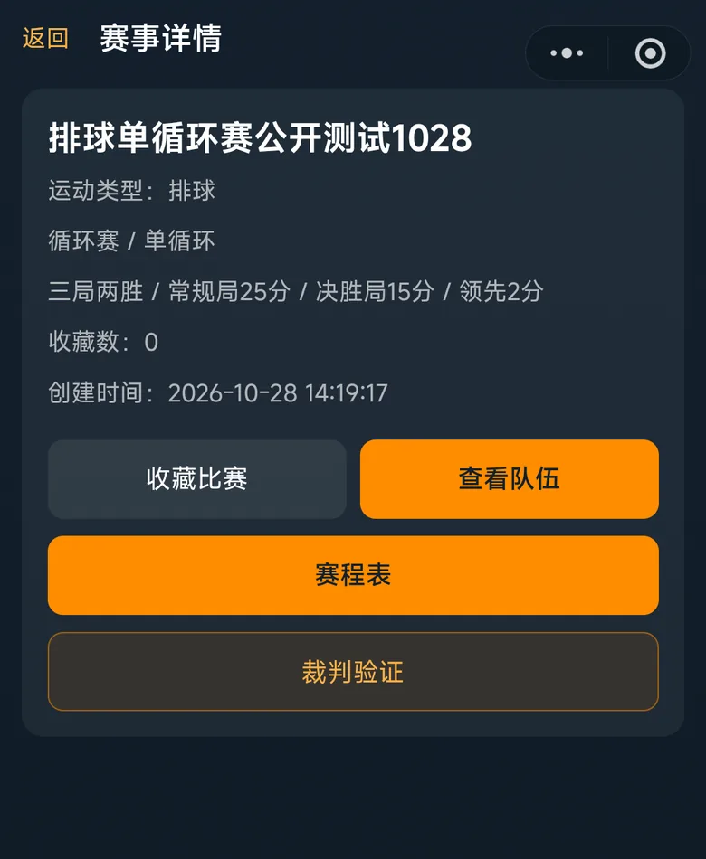
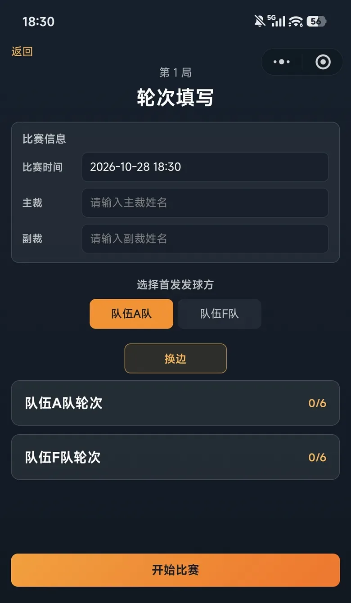
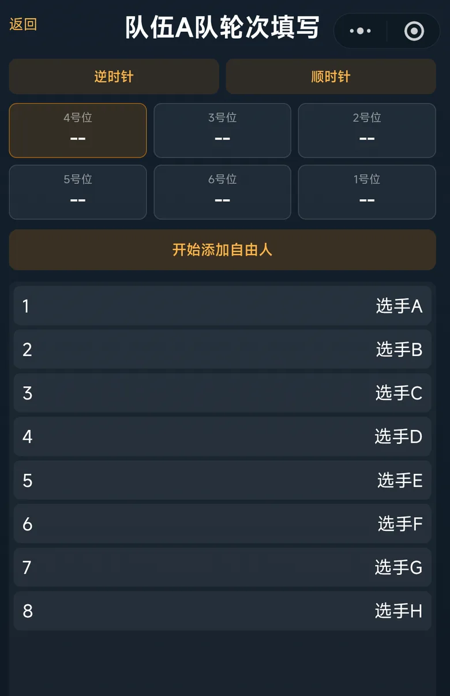
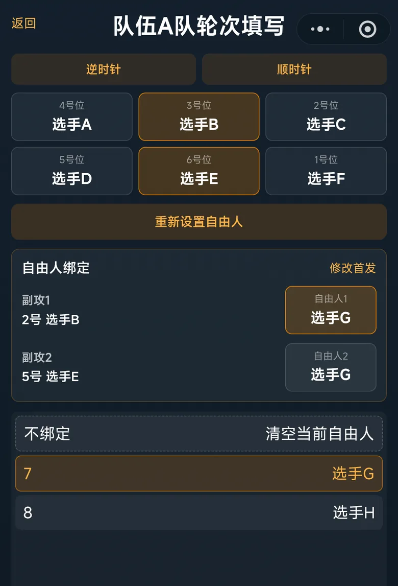
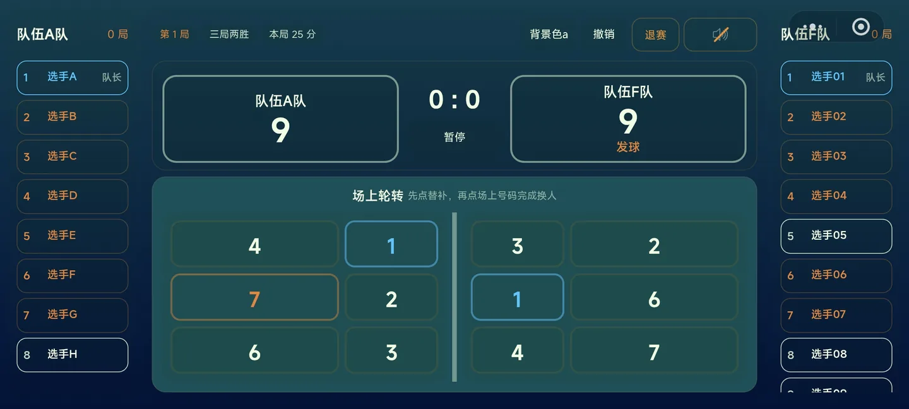
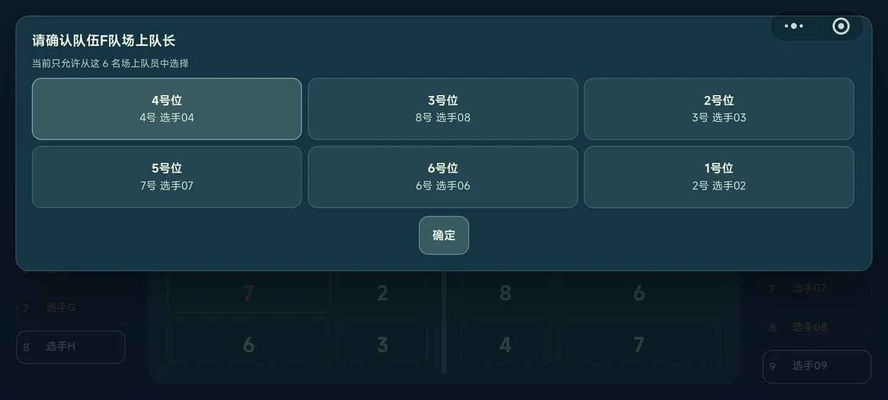
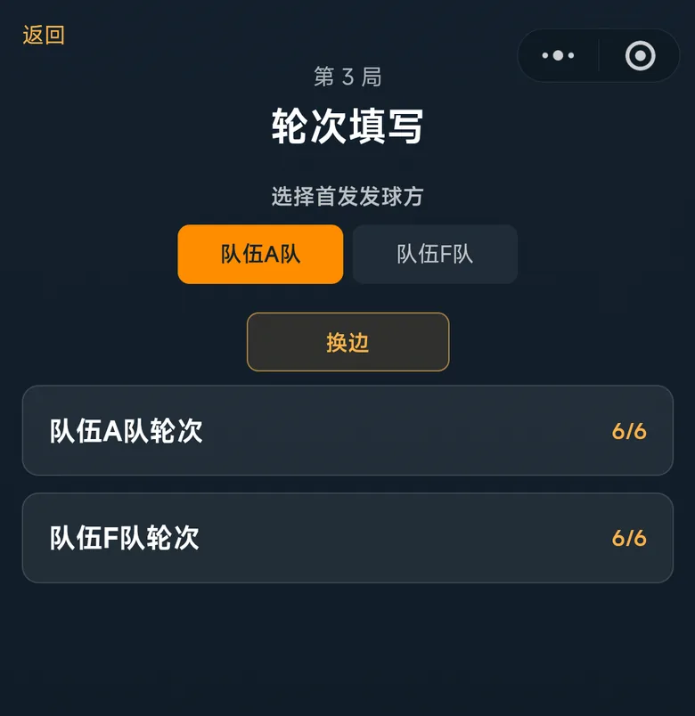
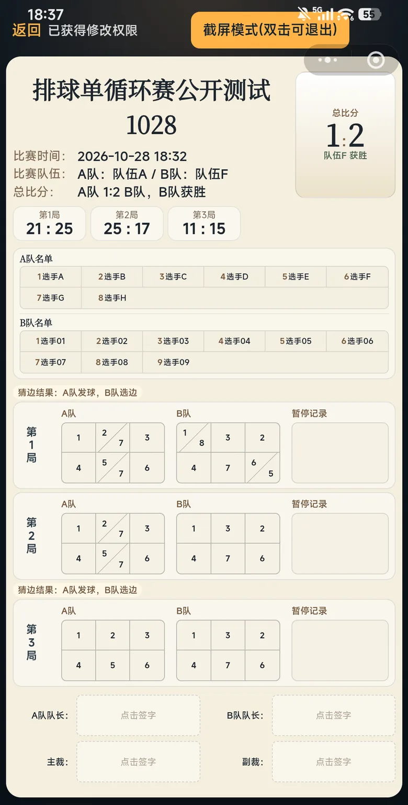

1
裁判身份录入
验证通过后才能填写比赛信息与执裁计分，请先完成这一步。
进入赛事，点击「裁判验证」
在赛事详情页找到 裁判验证 按钮并点击。
输入裁判密码，录入裁判身份
在弹窗中输入主办方提供的现场执裁密码（8 位以上数字），即可获得执裁权限。
还没登录？先登录
若进入小程序时还未登录，会先弹出登录框，完成微信登录后，再回来进行裁判验证。

2
比赛信息填写
挑选一场比赛进入后，系统自动进入轮次填写页。开赛前需要明确两件事：
1.填写主裁、副裁
录入本场主裁与副裁姓名（首局必填，同时确认比赛时间；这些信息会显示在战报与签名区）。
2.发球&选边
两队队长挑边后，裁判通过 换边 按钮调整左右场地归属、点选发球方（高亮）。

3
轮次填写&自由人绑定
点击「××队轮次」进入站位编辑页，两步完成配置；两队都填好后点「开始比赛」。


4
执裁计分
点击「开始比赛」进入横屏计分牌。先看懂球员格子的颜色标识：
蓝框 = 场上队长
橙框 = 自由人
暂停
点击中间 暂停 按钮，在弹窗中选择请求暂停的队伍。
确认场上队长
换人之后，或队长作为副攻被自由人换下时，系统会弹窗要求从场上 6 名队员中确认一名场上队长，确认后方可继续计分。
换人
先点替补席上的队员，再点球场上要被换下的号码，即完成换人。


5
局间信息继承
每一局结束后，系统自动回到轮次填写页，准备下一局。
默认换边 + 换发球方
每局之间系统默认交换场地与发球方。
默认沿用上局轮次
轮次默认复制前一局的开局轮次，请与双方队长确认是否需要调整。
⚠️ 决胜局前特别注意
决胜局开始前，需要重新选择发球方与选边，切勿直接沿用上一局！

6
战报签字
比赛结束后，三步完成收尾：
1.同步结算
在结算卡片上点击 同步结算，系统自动生成本场比赛战报。
2.四方签字
战报底部依次点击签字框：两队队长 + 主裁 + 副裁，手写签名。
3.封存归档
四方签齐后点击 封存战报，战报锁定归档，本场比赛完成。
